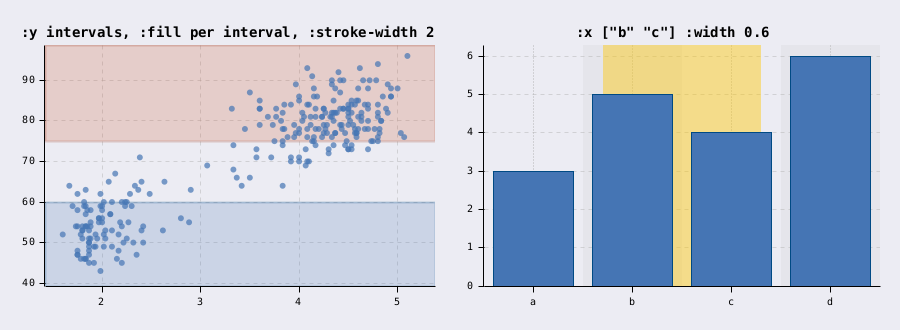
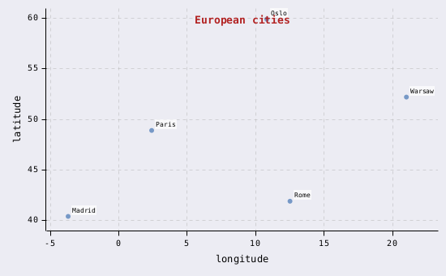

15 Charts: annotations
Marks placed by literal positions rather than by data: reference lines (rule), intervals (rect), labels (text), a picture (image) and curves of functions (function). Rule, rect and text also take data and a mapping - one mark per row. Each chart lists the mapping keys it reads, its own options and the shared option groups it takes (documented once in the Shared options chapter).
(ns reference.charts-annotations
(:require [cljplot2.chart :as chart]
[cljplot2.core :as plot]
[cljplot2.describe :as describe]
[notebook-utils :as nu])
(:import [java.awt.image BufferedImage]
[java.time LocalDate]))Data: Old Faithful geyser eruptions, R datasets package faithful (Härdle 1991; Azzalini & Bowman 1990); licence: Part of R (GPL-2 | GPL-3).
(def faithful (nu/dataset :faithful))| eruptions | waiting |
|---|---|
| 3.6 | 79 |
| 1.8 | 54 |
| 3.333 | 74 |
| 2.283 | 62 |
| 4.533 | 85 |
| 2.883 | 55 |
| 4.7 | 88 |
| 3.6 | 85 |
| 1.95 | 51 |
| 4.35 | 85 |
| 1.833 | 54 |
| 3.917 | 84 |
| 4.2 | 78 |
| 1.75 | 47 |
| 4.7 | 83 |
| 2.167 | 52 |
| 1.75 | 62 |
| 4.8 | 84 |
| 1.6 | 52 |
| 4.25 | 79 |
| 1.8 | 51 |
| 1.75 | 47 |
| 3.45 | 78 |
| 3.067 | 69 |
| 4.533 | 74 |
| 3.6 | 83 |
| 1.967 | 55 |
| 4.083 | 76 |
| 3.85 | 78 |
| 4.433 | 79 |
| 4.3 | 73 |
| 4.467 | 77 |
| 3.367 | 66 |
| 4.033 | 80 |
| 3.833 | 74 |
| 2.017 | 52 |
| 1.867 | 48 |
| 4.833 | 80 |
| 1.833 | 59 |
| 4.783 | 90 |
| 4.35 | 80 |
| 1.883 | 58 |
| 4.567 | 84 |
| 1.75 | 58 |
| 4.533 | 73 |
| 3.317 | 83 |
| 3.833 | 64 |
| 2.1 | 53 |
| 4.633 | 82 |
| 2 | 59 |
| 4.8 | 75 |
| 4.716 | 90 |
| 1.833 | 54 |
| 4.833 | 80 |
| 1.733 | 54 |
| 4.883 | 83 |
| 3.717 | 71 |
| 1.667 | 64 |
| 4.567 | 77 |
| 4.317 | 81 |
| 2.233 | 59 |
| 4.5 | 84 |
| 1.75 | 48 |
| 4.8 | 82 |
| 1.817 | 60 |
| 4.4 | 92 |
| 4.167 | 78 |
| 4.7 | 78 |
| 2.067 | 65 |
| 4.7 | 73 |
| 4.033 | 82 |
| 1.967 | 56 |
| 4.5 | 79 |
| 4 | 71 |
| 1.983 | 62 |
| 5.067 | 76 |
| 2.017 | 60 |
| 4.567 | 78 |
| 3.883 | 76 |
| 3.6 | 83 |
| 4.133 | 75 |
| 4.333 | 82 |
| 4.1 | 70 |
| 2.633 | 65 |
| 4.067 | 73 |
| 4.933 | 88 |
| 3.95 | 76 |
| 4.517 | 80 |
| 2.167 | 48 |
| 4 | 86 |
| 2.2 | 60 |
| 4.333 | 90 |
| 1.867 | 50 |
| 4.817 | 78 |
| 1.833 | 63 |
| 4.3 | 72 |
| 4.667 | 84 |
| 3.75 | 75 |
| 1.867 | 51 |
| 4.9 | 82 |
| … | … |
Data: US economic time series, 1967-2015, R ggplot2 package economics (Federal Reserve Bank of St. Louis, FRED); licence: MIT (ggplot2).
(def economics (nu/dataset :economics))| date | pce | pop | psavert | uempmed | unemploy |
|---|---|---|---|---|---|
| 1967-07-01 | 506.7 | 198712 | 12.6 | 4.5 | 2944 |
| 1967-08-01 | 509.8 | 198911 | 12.6 | 4.7 | 2945 |
| 1967-09-01 | 515.6 | 199113 | 11.9 | 4.6 | 2958 |
| 1967-10-01 | 512.2 | 199311 | 12.9 | 4.9 | 3143 |
| 1967-11-01 | 517.4 | 199498 | 12.8 | 4.7 | 3066 |
| 1967-12-01 | 525.1 | 199657 | 11.8 | 4.8 | 3018 |
| 1968-01-01 | 530.9 | 199808 | 11.7 | 5.1 | 2878 |
| 1968-02-01 | 533.6 | 199920 | 12.3 | 4.5 | 3001 |
| 1968-03-01 | 544.3 | 200056 | 11.7 | 4.1 | 2877 |
| 1968-04-01 | 544 | 200208 | 12.3 | 4.6 | 2709 |
| 1968-05-01 | 549.8 | 200361 | 12 | 4.4 | 2740 |
| 1968-06-01 | 556.3 | 200536 | 11.7 | 4.4 | 2938 |
| 1968-07-01 | 563.2 | 200706 | 10.7 | 4.5 | 2883 |
| 1968-08-01 | 567 | 200898 | 10.5 | 4.2 | 2768 |
| 1968-09-01 | 568.2 | 201095 | 10.6 | 4.6 | 2686 |
| 1968-10-01 | 571.6 | 201290 | 10.8 | 4.8 | 2689 |
| 1968-11-01 | 576.7 | 201466 | 10.6 | 4.4 | 2715 |
| 1968-12-01 | 576.5 | 201621 | 11.1 | 4.4 | 2685 |
| 1969-01-01 | 583.5 | 201760 | 10.3 | 4.4 | 2718 |
| 1969-02-01 | 588.7 | 201881 | 9.7 | 4.9 | 2692 |
| 1969-03-01 | 588.9 | 202023 | 10.2 | 4 | 2712 |
| 1969-04-01 | 593.9 | 202161 | 9.7 | 4 | 2758 |
| 1969-05-01 | 600.3 | 202331 | 10.1 | 4.2 | 2713 |
| 1969-06-01 | 600.9 | 202507 | 11.1 | 4.4 | 2816 |
| 1969-07-01 | 602.7 | 202677 | 11.8 | 4.4 | 2868 |
| 1969-08-01 | 609.9 | 202877 | 11.5 | 4.4 | 2856 |
| 1969-09-01 | 613.2 | 203090 | 11.6 | 4.7 | 3040 |
| 1969-10-01 | 618.5 | 203302 | 11.4 | 4.5 | 3049 |
| 1969-11-01 | 620.5 | 203500 | 11.6 | 4.8 | 2856 |
| 1969-12-01 | 622.8 | 203675 | 11.8 | 4.6 | 2884 |
| 1970-01-01 | 628.7 | 203849 | 11.8 | 4.6 | 3201 |
| 1970-02-01 | 634 | 204008 | 11.7 | 4.5 | 3453 |
| 1970-03-01 | 632.3 | 204156 | 12.4 | 4.6 | 3635 |
| 1970-04-01 | 636 | 204401 | 13.3 | 4.1 | 3797 |
| 1970-05-01 | 642.4 | 204607 | 12.4 | 4.7 | 3919 |
| 1970-06-01 | 646.3 | 204830 | 12.3 | 4.9 | 4071 |
| 1970-07-01 | 648.5 | 205052 | 13.5 | 5.1 | 4175 |
| 1970-08-01 | 652.9 | 205295 | 13.4 | 5.4 | 4256 |
| 1970-09-01 | 659.1 | 205540 | 12.9 | 5.2 | 4456 |
| 1970-10-01 | 658.3 | 205788 | 13.1 | 5.2 | 4591 |
| 1970-11-01 | 656.6 | 206024 | 13.6 | 5.6 | 4898 |
| 1970-12-01 | 665.6 | 206238 | 13.2 | 5.9 | 5076 |
| 1971-01-01 | 676.1 | 206466 | 13.3 | 6.2 | 4986 |
| 1971-02-01 | 679.4 | 206668 | 13.3 | 6.3 | 4903 |
| 1971-03-01 | 682 | 206855 | 13.5 | 6.4 | 4987 |
| 1971-04-01 | 688.8 | 207065 | 13.2 | 6.5 | 4959 |
| 1971-05-01 | 691.1 | 207260 | 13.6 | 6.7 | 4996 |
| 1971-06-01 | 699.8 | 207462 | 14.7 | 5.7 | 4949 |
| 1971-07-01 | 698.9 | 207661 | 13.8 | 6.2 | 5035 |
| 1971-08-01 | 704.9 | 207881 | 13.6 | 6.4 | 5134 |
| 1971-09-01 | 713 | 208114 | 13.3 | 5.8 | 5042 |
| 1971-10-01 | 715.8 | 208345 | 13.3 | 6.5 | 4954 |
| 1971-11-01 | 720.9 | 208555 | 13.1 | 6.4 | 5161 |
| 1971-12-01 | 728.4 | 208740 | 13 | 6.2 | 5154 |
| 1972-01-01 | 731.5 | 208917 | 12.5 | 6.2 | 5019 |
| 1972-02-01 | 736.2 | 209061 | 12.8 | 6.6 | 4928 |
| 1972-03-01 | 749.2 | 209212 | 11.8 | 6.6 | 5038 |
| 1972-04-01 | 752.5 | 209386 | 11.5 | 6.7 | 4959 |
| 1972-05-01 | 758 | 209545 | 11.7 | 6.6 | 4922 |
| 1972-06-01 | 761.6 | 209725 | 11.7 | 5.4 | 4923 |
| 1972-07-01 | 769.9 | 209896 | 11.7 | 6.1 | 4913 |
| 1972-08-01 | 776.3 | 210075 | 12 | 6 | 4939 |
| 1972-09-01 | 781.1 | 210278 | 12.2 | 5.6 | 4849 |
| 1972-10-01 | 794.9 | 210479 | 13 | 5.7 | 4875 |
| 1972-11-01 | 800.5 | 210656 | 13.6 | 5.7 | 4602 |
| 1972-12-01 | 806.1 | 210821 | 13.7 | 6.1 | 4543 |
| 1973-01-01 | 816.5 | 210985 | 12.4 | 5.7 | 4326 |
| 1973-02-01 | 825.8 | 211120 | 12.5 | 5.2 | 4452 |
| 1973-03-01 | 832.8 | 211254 | 12.7 | 5.5 | 4394 |
| 1973-04-01 | 835.7 | 211420 | 13.2 | 5 | 4459 |
| 1973-05-01 | 841.6 | 211577 | 13.2 | 4.9 | 4329 |
| 1973-06-01 | 844.3 | 211746 | 13.6 | 5 | 4363 |
| 1973-07-01 | 854.1 | 211909 | 13.2 | 5.2 | 4305 |
| 1973-08-01 | 853.3 | 212092 | 13.9 | 4.9 | 4305 |
| 1973-09-01 | 869.2 | 212289 | 13.1 | 5.4 | 4350 |
| 1973-10-01 | 868.2 | 212475 | 14.4 | 5.5 | 4144 |
| 1973-11-01 | 876.9 | 212634 | 14.4 | 5.1 | 4396 |
| 1973-12-01 | 876.6 | 212785 | 14.8 | 4.7 | 4489 |
| 1974-01-01 | 884.5 | 212932 | 14.3 | 5 | 4644 |
| 1974-02-01 | 889.7 | 213074 | 14.2 | 5.1 | 4731 |
| 1974-03-01 | 901.4 | 213211 | 13.4 | 4.8 | 4634 |
| 1974-04-01 | 910.8 | 213361 | 13.1 | 5 | 4618 |
| 1974-05-01 | 922.4 | 213513 | 12.8 | 4.6 | 4705 |
| 1974-06-01 | 928 | 213686 | 12.8 | 5.3 | 4927 |
| 1974-07-01 | 937.9 | 213854 | 12.8 | 5.7 | 5063 |
| 1974-08-01 | 954.8 | 214042 | 12.1 | 5 | 5022 |
| 1974-09-01 | 955.1 | 214246 | 12.9 | 5.3 | 5437 |
| 1974-10-01 | 959.2 | 214451 | 13.4 | 5.5 | 5523 |
| 1974-11-01 | 956.2 | 214625 | 13.8 | 5.2 | 6140 |
| 1974-12-01 | 961.8 | 214782 | 14 | 5.7 | 6636 |
| 1975-01-01 | 975.6 | 214931 | 13.2 | 6.3 | 7501 |
| 1975-02-01 | 989.4 | 215065 | 12.5 | 7.1 | 7520 |
| 1975-03-01 | 990.6 | 215198 | 12.7 | 7.2 | 7978 |
| 1975-04-01 | 995 | 215353 | 14.2 | 8.7 | 8210 |
| 1975-05-01 | 1018.9 | 215523 | 17.3 | 9.4 | 8433 |
| 1975-06-01 | 1026.8 | 215768 | 14.3 | 8.8 | 8220 |
| 1975-07-01 | 1039.8 | 215973 | 12.6 | 8.6 | 8127 |
| 1975-08-01 | 1047 | 216195 | 13 | 9.2 | 7928 |
| 1975-09-01 | 1054.8 | 216393 | 13 | 9.2 | 7923 |
| 1975-10-01 | 1060.9 | 216587 | 13.4 | 8.6 | 7897 |
| … | … | … | … | … | … |
15.1 rule
Straight lines across the panel: vertical at an x, horizontal at a y, or sloped y = intercept + slope · x - one per row of data, or at literal positions.
| Option | Type | Default | Description |
|---|---|---|---|
| :x | a keyword, a function or a categorical marker of one or nil | x position of a line along the y direction, one per row | |
| :y | a keyword, a function or a categorical marker of one or nil | y position of a line along the x direction, one per row | |
| :slope | a keyword, a function or a categorical marker of one or nil | slope of a line y = intercept + slope * x, one per row (with :intercept) | |
| :intercept | a keyword, a function or a categorical marker of one or nil | intercept of a line y = intercept + slope * x, one per row (with :slope) | |
| :color | a keyword, a function or a categorical marker of one or nil | line colour per group (gives legend keys) | |
| :dash | a keyword, a function or a categorical marker of one or nil | dash style per group (gives legend keys) | |
| :group | a keyword, a function or a categorical marker of one or nil | groups without a visual aesthetic |
(def thresholds [{:at 55 :kind "short wait"} {:at 80 :kind "long wait"}])| at | kind |
|---|---|
| 55 | short wait |
| 80 | long wait |
(plot/render-image {:data faithful
:mapping {:x :eruptions :y :waiting}
:charts [(chart/scatter)
(chart/rule {:data thresholds :mapping {:y :at :color :kind} :line-width 2})]
:labels {:x "eruptions [min]" :y "waiting [min]"}}
{:width 600 :height 360})
Its options: literal positions - one or a vector of them, across x (:x) or along it (:y) - and sloped lines:
| Option | Type | Default | Description |
|---|---|---|---|
| :x | a finite number, a java.time value or a level (string / keyword) or vector of a finite number, a java.time value or a level (string / keyword) (at least 1) or nil | literal x position(s) of lines along the y direction: a position or a vector of them (wins over the mapping) | |
| :y | a finite number, a java.time value or a level (string / keyword) or vector of a finite number, a java.time value or a level (string / keyword) (at least 1) or nil | literal y position(s) of lines along the x direction: a position or a vector of them (wins over the mapping) | |
| :slope | a finite number or vector of a finite number (at least 1) or nil | literal slope(s) of lines y = intercept + slope * x, a number or a vector of 1 or n (needs :intercept; linear scales only) | |
| :intercept | a finite number or vector of a finite number (at least 1) or nil | literal intercept(s) of lines y = intercept + slope * x, a number or a vector of 1 or n (needs :slope) |
(plot/render-image (plot/arrange [{:data faithful :mapping {:x :eruptions :y :waiting}
:charts [(chart/scatter) (chart/rule {:x [2 3 4] :dash :dashed})]
:labels {:title ":x [2 3 4]"}}
{:data faithful :mapping {:x :eruptions :y :waiting}
:charts [(chart/scatter)
(chart/rule {:slope [10.7 12] :intercept [33.5 25] :line-width 2
:color [200 80 40]})]
:labels {:title ":slope, :intercept (two lines)"}}
{:data faithful :mapping {:x :eruptions :y :waiting}
:charts [(chart/scatter) (chart/rule {:y [55 80] :line-width 2 :color [40 140 60]})]
:labels {:title ":y [55 80]"}}]
{:columns 3})
{:width 1000 :height 330})
Shared options: Line style (:color :line-width :dash); Data and mapping (:data :mapping); Named theme styles (:theme-style); Annotation options (:extent).
15.2 rect
Rectangles spanning x and / or y intervals; an open end (nil) reaches the panel edge - shaded periods or ranges.
| Option | Type | Default | Description |
|---|---|---|---|
| :x0 | a keyword, a function or a categorical marker of one or nil | x start of a rect, one per row (with :x1; nil - the panel edge) | |
| :x1 | a keyword, a function or a categorical marker of one or nil | x end of a rect, one per row (with :x0; nil - the panel edge) | |
| :y0 | a keyword, a function or a categorical marker of one or nil | y start of a rect, one per row (with :y1; nil - the panel edge) | |
| :y1 | a keyword, a function or a categorical marker of one or nil | y end of a rect, one per row (with :y0; nil - the panel edge) | |
| :color | a keyword, a function or a categorical marker of one or nil | fill colour per group or row (gives legend keys) | |
| :pattern | a keyword, a function or a categorical marker of one or nil | fill pattern per group (gives legend keys) | |
| :shape | a keyword, a function or a categorical marker of one or nil | groups the rects (no visual effect) | |
| :size | a keyword, a function or a categorical marker of one or nil | groups the rects (no visual effect) | |
| :group | a keyword, a function or a categorical marker of one or nil | groups without a visual aesthetic |
(def recessions [{:name "1973-75" :from (LocalDate/parse "1973-11-01") :to (LocalDate/parse "1975-03-01")}
{:name "1980-82" :from (LocalDate/parse "1980-01-01") :to (LocalDate/parse "1982-11-01")}
{:name "1990-91" :from (LocalDate/parse "1990-07-01") :to (LocalDate/parse "1991-03-01")}
{:name "2001" :from (LocalDate/parse "2001-03-01") :to (LocalDate/parse "2001-11-01")}
{:name "2007-09" :from (LocalDate/parse "2007-12-01") :to (LocalDate/parse "2009-06-01")}])| name | from | to |
|---|---|---|
| 1973-75 | 1973-11-01 | 1975-03-01 |
| 1980-82 | 1980-01-01 | 1982-11-01 |
| 1990-91 | 1990-07-01 | 1991-03-01 |
| 2001 | 2001-03-01 | 2001-11-01 |
| 2007-09 | 2007-12-01 | 2009-06-01 |
(plot/render-image {:data economics
:mapping {:x #(LocalDate/parse (:date %)) :y :unemploy}
:charts [(chart/rect {:data recessions :mapping {:x0 :from :x1 :to}})
(chart/line)]
:labels {:y "unemployed [thousands]"}}
{:width 700 :height 340})
Its options: literal intervals (here on y, with one fill colour each), the fill, its opacity and outline, and how much of a band a level end covers:
| Option | Type | Default | Description |
|---|---|---|---|
| :stroke-color | :darker or a clojure2d color or :none | :none | outline colour: a colour, :none or :darker (the darkened fill; no outline without a fill) |
| :stroke-width | a non-negative number | 1 | outline width in pixels |
| :fill | a clojure2d color or :none or vector of a clojure2d color or :none (at least 1) | [0.0 0.0 0.0 30.0] | fill colour, or a vector of 1 or n colours paired with literal intervals (a mapped :color wins) |
| :alpha | a number in [0 1] | colours as they are | fill opacity |
| :x | [a finite number, a java.time value or a level (string / keyword) or nil, a finite number, a java.time value or a level (string / keyword) or nil] or vector of [a finite number, a java.time value or a level (string / keyword) or nil, a finite number, a java.time value or a level (string / keyword) or nil] (at least 1) or nil | literal x interval(s) [a b] (an end nil - the panel edge), alone a band across the panel (wins over the mapping) | |
| :y | [a finite number, a java.time value or a level (string / keyword) or nil, a finite number, a java.time value or a level (string / keyword) or nil] or vector of [a finite number, a java.time value or a level (string / keyword) or nil, a finite number, a java.time value or a level (string / keyword) or nil] (at least 1) or nil | literal y interval(s) [a b] (an end nil - the panel edge), alone a band across the panel (wins over the mapping) | |
| :width | a finite number, > 0, <= 1 | 1.0 | fraction of its band step a level end covers, centred |
(def levels-data [{:k "a" :v 3} {:k "b" :v 5} {:k "c" :v 4} {:k "d" :v 6}])| k | v |
|---|---|
| a | 3 |
| b | 5 |
| c | 4 |
| d | 6 |
(plot/render-image (plot/arrange [{:data faithful :mapping {:x :eruptions :y :waiting}
:charts [(chart/rect {:y [[nil 60] [75 nil]] :fill [[69 117 180] [200 80 40]] :alpha 0.2
:stroke-color :darker :stroke-width 2})
(chart/scatter)]
:labels {:title ":y intervals, :fill per interval, :stroke-width 2"}}
{:data levels-data :mapping {:x :k :y :v}
:charts [(chart/rect {:x ["b" "c"] :width 0.6 :fill [255 200 0 110]})
(chart/bar)]
:scales {:x {:domain ["a" "b" "c" "d"]}}
:labels {:title ":x [\"b\" \"c\"] :width 0.6"}}]
{:columns 2})
{:width 900 :height 330})
Shared options: Fill patterns (:pattern :pattern-color); Data and mapping (:data :mapping); Named theme styles (:theme-style); Annotation options (:extent); Rounded corners (:corner-radius).
15.3 text
Labels at positions - from data (one per row, :label the text) or literal, also at a fraction of the panel ([:panel f]). As an annotation it reads the plot’s data but only its own mapping (and the plot’s facet keys).
| Option | Type | Default | Description |
|---|---|---|---|
| :x | a keyword, a function or a categorical marker of one or nil | x position of a label, one per row | |
| :y | a keyword, a function or a categorical marker of one or nil | y position of a label, one per row | |
| :label | a keyword, a function or a categorical marker of one or nil | label text, one per row (converted with str) | |
| :angle | a keyword, a function or a categorical marker of one or nil | label rotation in degrees, clockwise (nil or not finite - :rotation) | |
| :color | a keyword, a function or a categorical marker of one or nil | text colour per group (gives legend keys) | |
| :group | a keyword, a function or a categorical marker of one or nil | groups without a visual aesthetic (labels per group with :select) |
(def cities [{:city "Oslo" :lon 10.8 :lat 59.9} {:city "Rome" :lon 12.5 :lat 41.9} {:city "Madrid" :lon -3.7 :lat 40.4}
{:city "Paris" :lon 2.4 :lat 48.9} {:city "Warsaw" :lon 21.0 :lat 52.2}])| city | lon | lat |
|---|---|---|
| Oslo | 10.8 | 59.9 |
| Rome | 12.5 | 41.9 |
| Madrid | -3.7 | 40.4 |
| Paris | 2.4 | 48.9 |
| Warsaw | 21.0 | 52.2 |
(plot/render-image {:data cities
:mapping {:x :lon :y :lat}
:charts [(chart/scatter)
(chart/text {:mapping {:x :lon :y :lat :label :city} :anchor [:left :bottom] :offset [4 2]})]
:labels {:x "longitude" :y "latitude"}}
{:width 550 :height 340})
Its options: literal positions and texts, the anchor and offset, rotation, labels of only the last (or first) row per group, and room kept for labels past the data:
| Option | Type | Default | Description |
|---|---|---|---|
| :role | keyword | :annotation | theme text role of the labels (a role of [:text], e.g. a builder's), the style under the inline style keys |
| :x | [:panel f], f in [0 1] or a finite number, a java.time value or a level (string / keyword) or [:panel f], f in [0 1] or vector of a finite number, a java.time value or a level (string / keyword) or [:panel f], f in [0 1] (at least 1) or nil | literal x position(s): a position, [:panel f] (fraction f of the panel, not in the extents) or a vector of 1 or n (wins over the mapping) | |
| :y | [:panel f], f in [0 1] or a finite number, a java.time value or a level (string / keyword) or [:panel f], f in [0 1] or vector of a finite number, a java.time value or a level (string / keyword) or [:panel f], f in [0 1] (at least 1) or nil | literal y position(s): a position, [:panel f] (fraction f of the panel, not in the extents) or a vector of 1 or n (wins over the mapping) | |
| :text | any value or nil | literal label text: a value or a vector of 1 or n (converted with str) | |
| :anchor | [one of :left :center :right, one of :top :middle :bottom] | [:center :middle]; with :select just past the point; polar :radial - away from the centre | point of the text box placed at the position, [h v] (h :left :center :right, v :top :middle :bottom) |
| :offset | [a finite number, a finite number] | [0 0]; with :select 5 pixels past the point | shift [dx dy] of the text in pixels, dy up |
| :rotation | a finite number or :radial | 0 | text rotation in degrees, clockwise, or :radial (polar: along each label's angle, upright; 0 in cartesian plots) (a mapped :angle wins) |
| :select | one of :last :first | end labels from data: keep per group and text only the row with the largest (:last) or smallest (:first) x | |
| :anchor-frame | one of :box :text | :box | what :anchor points into: :box (the rotated label's bounding box) or :text (the unrotated text, turned about that point) |
| :reserve-room | true or false or :anchor | false | keep pixel room past the data for the labels: true - the largest label's diagonal on every side, :anchor - only where the anchored labels reach |
(def growth (for [g ["alpha" "beta" "gamma"] t (range 10)]
{:g g :t t :v (+ (case g "alpha" 2.0 "beta" 0.0 "gamma" 9.0) (* t (case g "alpha" 1.0 "beta" 1.6 "gamma" 0.4)))}))| g | t | v |
|---|---|---|
| alpha | 0 | 2.0 |
| alpha | 1 | 3.0 |
| alpha | 2 | 4.0 |
| alpha | 3 | 5.0 |
| alpha | 4 | 6.0 |
| alpha | 5 | 7.0 |
| alpha | 6 | 8.0 |
| alpha | 7 | 9.0 |
| alpha | 8 | 10.0 |
| alpha | 9 | 11.0 |
| beta | 0 | 0.0 |
| beta | 1 | 1.6 |
| beta | 2 | 3.2 |
| beta | 3 | 4.800000000000001 |
| beta | 4 | 6.4 |
| beta | 5 | 8.0 |
| beta | 6 | 9.600000000000001 |
| beta | 7 | 11.200000000000001 |
| beta | 8 | 12.8 |
| beta | 9 | 14.4 |
| gamma | 0 | 9.0 |
| gamma | 1 | 9.4 |
| gamma | 2 | 9.8 |
| gamma | 3 | 10.2 |
| gamma | 4 | 10.6 |
| gamma | 5 | 11.0 |
| gamma | 6 | 11.4 |
| gamma | 7 | 11.8 |
| gamma | 8 | 12.2 |
| gamma | 9 | 12.6 |
(plot/render-image (plot/arrange [{:data faithful :mapping {:x :eruptions :y :waiting}
:charts [(chart/scatter)
(chart/text {:x [:panel 0.02] :y [:panel 0.98] :anchor [:left :top]
:text "272 eruptions"})
(chart/text {:x 3 :y 70 :text "few here" :rotation -30})]
:labels {:title "[:panel f], :rotation -30"}}
{:data growth :mapping {:x :t :y :v :color :g}
:charts [(chart/line)
(chart/text {:mapping {:x :t :y :v :color :g :label :g}
:select :last :reserve-room :anchor})]
:labels {:title ":select :last, :reserve-room :anchor"}
:legend false}]
{:columns 2})
{:width 900 :height 330})
End labels of the first row per group instead (:select :first), and what a rotated label’s :anchor points into: the rotated label’s bounding box (:box, the default) or the text itself, turned about the anchor point (:text) - each label turned upright, anchored at its left top on the red point: the box’s top left corner, or the start of the text’s top edge:
(def anchor-points [{:x 1 :y 1 :label "frame"}])| x | y | label |
|---|---|---|
| 1 | 1 | frame |
(plot/render-image (plot/arrange [{:data growth :mapping {:x :t :y :v :color :g}
:charts [(chart/line)
(chart/text {:mapping {:x :t :y :v :color :g :label :g}
:select :first :anchor [:right :middle] :offset [-5 0]
:reserve-room :anchor})]
:labels {:title ":select :first"}
:legend false}
{:data anchor-points :mapping {:x :x :y :y}
:charts [(chart/scatter {:color :red})
(chart/text {:mapping {:x :x :y :y :label :label} :rotation -90 :size 18
:anchor [:left :top] :anchor-frame :box})]
:scales {:x {:domain [0 2]} :y {:domain [0 2]}}
:labels {:title ":anchor-frame :box"}}
{:data anchor-points :mapping {:x :x :y :y}
:charts [(chart/scatter {:color :red})
(chart/text {:mapping {:x :x :y :y :label :label} :rotation -90 :size 18
:anchor [:left :top] :anchor-frame :text})]
:scales {:x {:domain [0 2]} :y {:domain [0 2]}}
:labels {:title ":anchor-frame :text"}}]
{:columns 3})
{:width 1000 :height 320})
The labels’ style is a theme text role, :annotation by default; :role picks another - a role the theme adds, or a builder’s (here :network-label, small names on white boxes), the inline style keys still over it:
(plot/render-image {:data cities
:mapping {:x :lon :y :lat}
:charts [(chart/scatter)
(chart/text {:mapping {:x :lon :y :lat :label :city} :anchor [:left :bottom] :offset [4 2]
:role :network-label})
(chart/text {:x [:panel 0.5] :y [:panel 0.95] :text "European cities" :role :callout})]
:theme {:text {:callout {:font "DejaVu Sans Mono" :size 13 :font-style :bold :color [178 34 34]
:inset 2}}}
:labels {:x "longitude" :y "latitude"}}
{:width 550 :height 340})
Shared options: Text style (:font :size :font-style :color :inset :background); Data and mapping (:data :mapping); Annotation options (:extent).
15.4 image
A picture drawn into the panel: a function gets the panel’s scales, domains and pixel size and returns an image; it reads no mapping. Here a radial gradient covering the data range [-1 1] × [-1 1]:
(plot/render-image {:charts [(chart/image {:domain {:x [-1 1] :y [-1 1]}
:f (fn [{[w h] :size}]
(let [w (int w) h (int h)
img (BufferedImage. w h BufferedImage/TYPE_INT_RGB)]
(doseq [i (range w) j (range h)
:let [d (Math/hypot (- (/ (* 2.0 i) w) 1) (- (/ (* 2.0 j) h) 1))
c (int (* 255 (max 0.0 (- 1.0 (* 0.7 d)))))]]
(.setRGB img i j (+ (* 65536 c) (* 256 (quot c 2)) 80)))
img))})]}
{:width 450 :height 350})
Its options: the function and the data range the image covers - without :domain the image follows the other charts’ domains (here a scatter’s), drawn below them:
| Option | Type | Default | Description |
|---|---|---|---|
| :f (required) | a function | callback of {:x-scale :y-scale :x-domain :y-domain :facet :size} returning the panel's image (a BufferedImage, clojure2d canvas or pixels; nil - nothing) | |
| :domain | map | the image follows the other charts' domains | the data range the image covers, added to the extents without padding or nice ends |
| :domain :x (required) | [a finite number, a finite number] | x range [lo hi] (data units) | |
| :domain :y (required) | [a finite number, a finite number] | y range [lo hi] (data units) |
(plot/render-image {:data faithful
:mapping {:x :eruptions :y :waiting}
:charts [(chart/image {:f (fn [{[w h] :size}]
(let [w (int w) h (int h)
img (BufferedImage. w h BufferedImage/TYPE_INT_RGB)]
(doseq [i (range w) j (range h)
:let [c (int (+ 180 (* 60 (/ (double i) w))))]]
(.setRGB img i j (+ (* 65536 c) (* 256 c) 235)))
img))})
(chart/scatter)]}
{:width 550 :height 340})
15.5 function
Curves of functions y = f(x), or parametric [x y] = f(t), sampled at drawing; several functions are labelled and may be mapped to colour or dash by the chart’s own mapping.
| Option | Type | Default | Description |
|---|---|---|---|
| :color | a keyword, a function or a categorical marker of one or nil | line colour per function label (e.g. :function) | |
| :dash | a keyword, a function or a categorical marker of one or nil | dash style per function label | |
| :group | a keyword, a function or a categorical marker of one or nil | groups without a visual aesthetic, each its own function |
(plot/render-image {:charts [(chart/function {:f {"sin" #(Math/sin %) "cos" #(Math/cos %)}
:domain [0 (* 2 Math/PI)]
:mapping {:color :function :dash :function}})]}
{:width 600 :height 320})
15.5.1 Curve
The functions, their domain (or :t range of a parametric curve), the sampling step, the fill and the chart’s own mapping:
| Option | Type | Default | Description |
|---|---|---|---|
| :fill | a clojure2d color or :none | :none | fill colour (or :none) of the area to y = 0 (:f) or of the polygon the curve closes (:parametric) |
| :mapping | a mapping: key -> accessor (a keyword or a function of a row) | the chart's own mapping of the function labels (e.g. {:color :function}); only facet keys come from the plot | |
| :f | a function, a non-empty vector of functions or of [label function] pairs, or a non-empty map label -> function | y = f(x): a function, a vector of functions or of [label function] pairs, or a map label -> function (this or :parametric) | |
| :parametric | a function, a non-empty vector of functions or of [label function] pairs, or a non-empty map label -> function | [x y] = f(t): functions given as for :f (this or :f) | |
| :domain | [lo hi]: finite numbers lo < hi, or two different java.time values | the plot's explicit x domain, else the x scale's domain at drawing | x span [lo hi] the :f functions are sampled over: numbers or java.time values |
| :t | [lo hi]: finite numbers lo < hi, or two different java.time values | t span [lo hi] of :parametric (required there): numbers or java.time values | |
| :sample-step | a positive number of pixels or {:count n}, n >= 2 | 1 pixel for :f, {:count 500} for :parametric | distance between samples: pixels along x or {:count n} (:parametric - only {:count n}) |
(plot/render-image (plot/arrange [{:charts [(chart/function {:f #(* % % 0.5) :domain [-2 2] :fill [69 117 180 60]})]
:labels {:title ":f, :fill"}}
{:charts [(chart/function {:parametric (fn [t] [(Math/sin (* 3 t)) (Math/sin (* 4 t))])
:t [0 (* 2 Math/PI)] :fill [200 80 40 60]})]
:aspect :iso
:labels {:title ":parametric (Lissajous)"}}
{:charts [(chart/function {:f #(Math/sin %) :domain [0 10] :sample-step 25})]
:labels {:title ":sample-step 25 px"}}]
{:columns 3})
{:width 1000 :height 320})
15.5.2 Gaps
A nil or non-finite result breaks the curve, or a faint segment bridges the gap:
| Option | Type | Default | Description |
|---|---|---|---|
| :bridge | map | {:alpha-factor 0.3} | style of the segments bridging gaps with :gaps :bridge: :alpha-factor (a fraction of the line alpha), optional :line-width and :dash |
| :bridge :alpha-factor (required) | a number in [0 1] | 0.3 in the theme's :bridge (a given :bridge replaces it whole) | bridge opacity, a fraction of the line's alpha |
| :bridge :line-width | a non-negative number | the line's width | bridge line width in pixels |
| :bridge :dash | :none, a dash style (:dashed :dot-dash :dot-dot-dash :dotted :long-dash :loose-dot :solid :two-dash) or a sequence of positive numbers or nil | the line's dash | dash style of the bridge |
| :gaps | one of :break :bridge | :break | nil or non-finite results break the curve: :break (empty space) or :bridge (a straight segment in the :bridge style) |
(plot/render-image (plot/arrange [{:charts [(chart/function {:f #(Math/sqrt (- 1 (* % %))) :domain [-2 2]})]
:labels {:title ":gaps :break (default)"}}
{:charts [(chart/function {:f #(when-not (< 1 % 2) (Math/sin %)) :domain [0 6]
:gaps :bridge :bridge {:alpha-factor 0.6 :dash :dotted}})]
:labels {:title ":gaps :bridge"}}]
{:columns 2})
{:width 800 :height 300})
15.5.3 Extent
Which samples count for the y axis: the 1% - 99% quantiles by default (a pole doesn’t stretch the axis), all of them, or those within :y-limits:
| Option | Type | Default | Description |
|---|---|---|---|
| :y-limits | [lo hi], finite numbers, lo < hi | [lo hi] - samples outside don't count for the y extent (the curve is only clipped) | |
| :y-extent | :quantiles, :min-max, :none or {:quantiles [p q]}, 0 <= p < q <= 1 | :quantiles | y extent of the samples without :y-limits or an explicit y domain: :quantiles (1% and 99%), {:quantiles [p q]}, :min-max or :none |
| :padding | map of one of :x :y to [lo hi], non-negative numbers | 0.05 on every side | padding of the data span per position axis, {:x [lo hi] :y [lo hi]} fractions of the span |
(plot/render-image (plot/arrange [{:charts [(chart/function {:f #(Math/tan %) :domain [0 3]})]
:labels {:title ":y-extent :quantiles (default)"}}
{:charts [(chart/function {:f #(Math/tan %) :domain [0 3] :y-extent :min-max})]
:labels {:title ":y-extent :min-max"}}
{:charts [(chart/function {:f #(Math/tan %) :domain [0 3] :y-limits [-5 5]})]
:labels {:title ":y-limits [-5 5]"}}]
{:columns 3})
{:width 1000 :height 300})
The padding of the sampled span: none on x (the curve meets the panel’s sides), a quarter of the span on y:
(plot/render-image {:charts [(chart/function {:f #(Math/sin %) :domain [0 6.3] :padding {:x [0 0] :y [0.25 0.25]}})]
:labels {:title ":padding {:x [0 0] :y [0.25 0.25]}"}}
{:width 500 :height 280})
Shared options: Line style (:color :line-width :dash); Named theme styles (:theme-style).
source: notebooks/reference/charts_annotations.clj